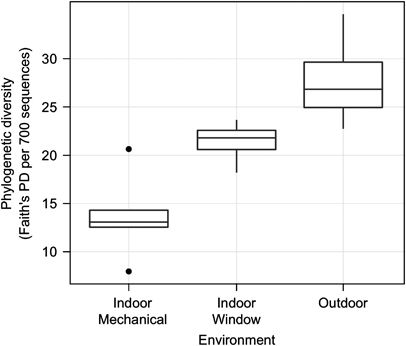
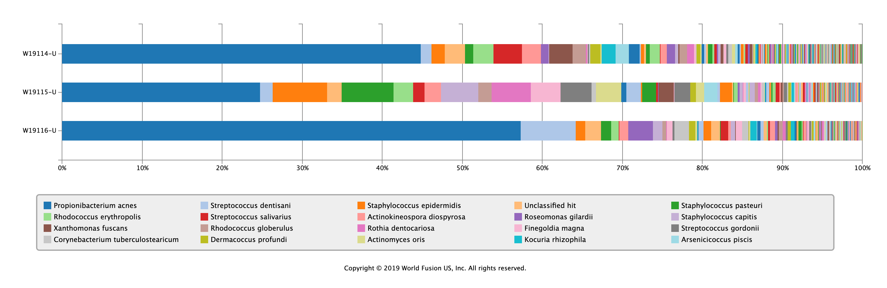
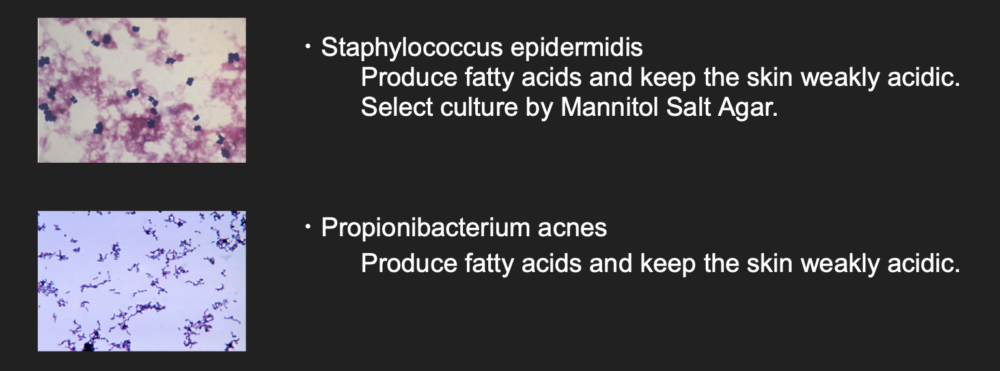
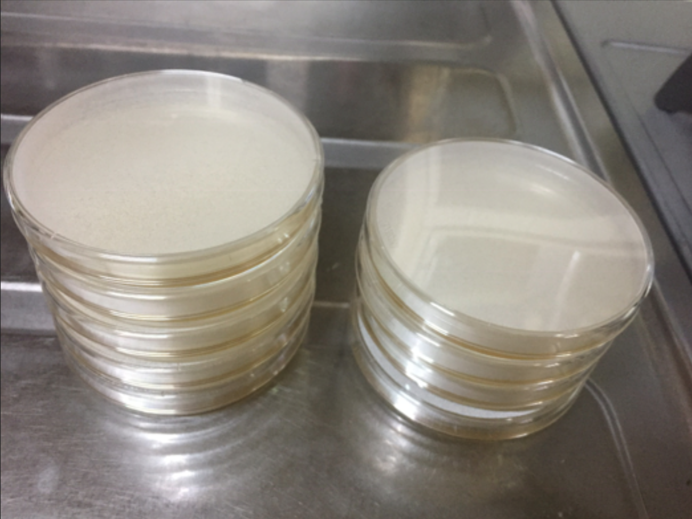

Immunity wall/ or extended skin
Project(Work in progress)
Final presentation
Theme : Can we recognize the architecture as part of my body?
Design the architectural wall with an immune mechanism by maintaining an ideal microbial flora like our skin microbiome.
Previous studies
1. Biology arena
Nowadays, we sterilize everything we touch to protect ourselves from disease. However, antibiotic resistance bacteria are increasing year by year.
2. Architectural design arena
Jessica Green of the University of Oregon research the building microbiome by metagenome analysis. She argues the machine ventilation system reduce the diversity of bacteria in building.
And some research gropes analyse the microbiome in the architecture.
Hypothesis and the purpose of this project
I think we have to reconsider excessive sterilization and use of antibiotics.
So I'd like to consider architecture with a defense mechanism by microbial flora like our skin.
And I want to ask people through this project: Can we recognize architecture as part of my body?
Project abstract
1. My family's skin microbiome analysis.
2. Selection and culture of bacteria.
3. Designing the architectural wall.
4. Making the future scenario.
5. Evaluation.
Progress of the project
1. My family's skin microbiome analysis.
First, I asked for metagenome analysis to know the bacterial balance of my skin microbiome. I swabed my family's skin and collected samples. I sent these samples to the bioinfomatics company. Few weeks ago, I received the result of metagenom analysis.
This is the result of metagenome analysis of samples.
The samples are my mother, my grandfather and myself.
Because I and my mother are close to lifestyles, the balance of skin microbiome is relatively similar. On the other hand, I can see that my grandfather has different skin microbiome balance.
2. Selection and culture of bacteria.
Ideally, I want to reproduce these skin microbiome balance on the architectural wall. But it's so hard. So in this project, I selected 2 bacteria spp, and cultivate them.
2 spp are Staphylococcus epidermidis and Propionibacterium acnes. Both bacterias produce fatty acids to keep the skin weakly acidic. Weakly acidic skin can protect ourselves from some infection.
Now, I cultivate my skin microbiome and isolate these 2 bacteria spp from it in my house.
3. Designing the architectural wall.
It is difficult to make a big wall in this project. So I plan to create doorknobs or control panels, which are elements of architecture that people frequently contact.
4. Making the future scenario.
I'm wrriting the future scenario that shows how the "wall" is used.
5. Evaluation.
I'm planning a metagenome analysis of my house environmental microbiome. Therefore, I'd like to evaluate from the analysis results how much the target bacteria have become established in the "wall" I made.